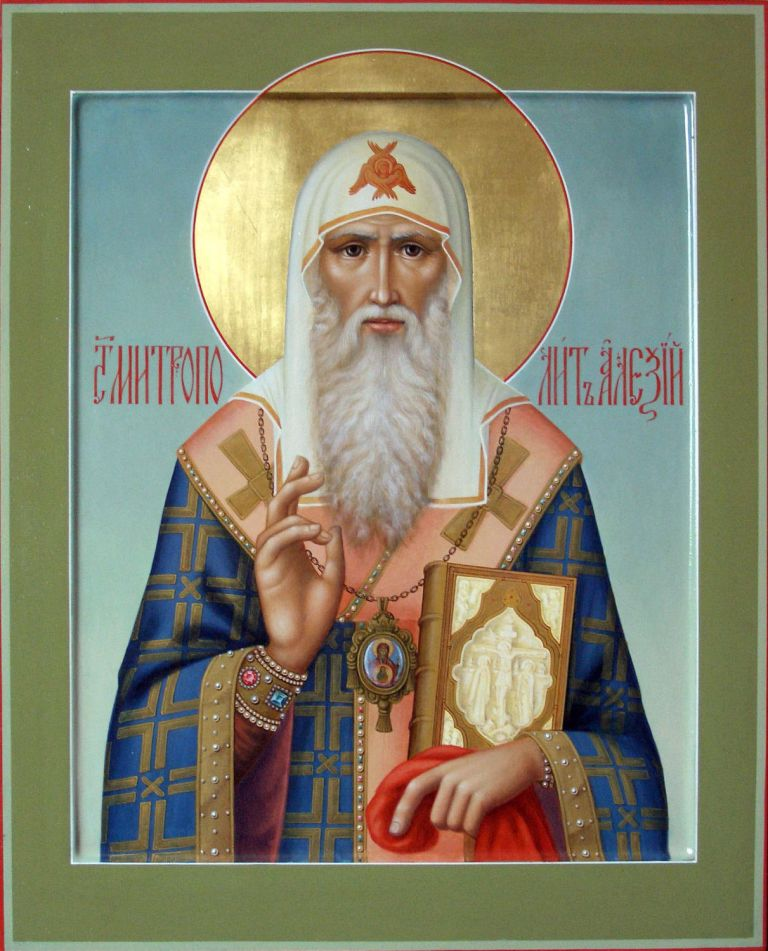

Избранный архиерею и слуго Великаго Архиерея Иисуса, преблаженне Алексие! Яко сподобльшеся многих твоих благодеяний, не имеюще же что воздати, похвальная восписуем ти и от души взываем, проповедающе чудеса твоя: испроси нам от Царя Небеснаго безбедно преити прочее жития сего и достигнути Горняго Иерусалима, да тамо узревше тя в блаженней радости, воззовем к тебе:
Радуйся, Алексие, великий чудотворче и скорый помощниче.
Ангеле, от земли прозябый! Великаго Совета Ангел, провидев доброту души твоея, прежде век избра тебе, еже благовестити плененным отпущение и слепым прозрение. Отнюдуже мы, грешнии, светом дел твоих получивше прозрение и грехов отпущение, взываем:
Радуйся, корене благаго отрасль блажайшая; радуйся, честных родителей добрейший сыне.
Радуйся, благоуханнаго сада прозябение; радуйся, духовным возрождением Богу Отцу усыновленный.
Радуйся, миропомазанием Святаго Духа запечатленный; радуйся, имя, яко миро излиянное, свыше восприявый.
Радуйся, от пелен Богу посвященный; радуйся, мужественно иго Христово на себе возложивый.
Радуйся, земная и мимотекущая, яко уметы, вменивый; радуйся, егоже Человек домовит — Иисус утро наят делателя в виноград Свой.
Радуйся, образ Божий и подобие свято соблюдший; радуйся, красото, душевныя и телесныя всех очи увеселяющая.
Радуйся, Алексие, великий чудотворче и скорый помощниче.
Видя откровением Духа Святаго, яко не устоят нечестивии на суде праведнем, но суть яко прах, егоже возметает ветр, от младых ногтей, преблаженне Алексие, на совет их не шел еси, ниже на пути грешных человеков стал еси, но, Закону Божию усердно поучался, и прочим внушал еси пети: Аллилуиа.
Разум свыше прием, мал детищ сущь, еже не труждатися всуе в ловлении птиц, потщался еси вся яже на земли красная оставити. Темже мы приглашаем тебе:
Радуйся, на ловитву человеков призванный; радуйся, к Горним, яко на крилах возлетавый.
Радуйся, море житейское любомудрием испытавый; радуйся, волнение его безопасно прошедый.
Радуйся, земле благая, семя слова Божия восприявшая; радуйся, земле, плод сторичный произрастившая.
Радуйся, пшенице, хлеб Небесный устроившая; радуйся, в житнице Небесной соблюденная.
Радуйся, обретый многоценный бисер и его всем, елика имел еси, купивый; радуйся, зельным пощением, яко благовкусною пищею, от юности питавыйся.
Радуйся, всенощным стоянием и непрестанными молитвами себе в подвизе укрепивый; радуйся, в море слез твоих множества демонов потопивый.
Радуйся, Алексие, великий чудотворче и скорый помощниче.
Силою свыше, егда облече тя Дух Всесвятый, пастыря Церкви российстей поставляя, тогда всем людем твоим вдыхал еси хвалу: Аллилуиа.
Подобаше, отче Алексие, с Небесе песни тебе воспеваемей быти, а не от земли: кто бо от человек возможет по достоинству твоея святыни величия поведати? Но мы, любовию твоею побеждаеми, вопием ти сице:
Радуйся, дольняя и красная мира презревый; радуйся, вышних красот желанием воспаленный.
Радуйся, Единаго Христа от сердца возлюбивый; радуйся, Тому Единому всею душею прилепивыйся.
Радуйся, правило веры благочестивыя; радуйся, благий делателю винограда Христова.
Радуйся, дарованный талант приумноживый; радуйся, в радость Господа твоего вшедый.
Радуйся, сладостьми духовными нас насыщающий; радуйся, благоприятное Богу кадило.
Радуйся, благоухание молитвы к Престолу Вышняго возносящий; радуйся, любовный к Богу о нас предстателю.
Радуйся, Алексие, великий чудотворче и скорый помощниче.
Бурю безместных помыслов, от диавола непрестанно воздвизаемую, до конца укротил еси и, радуяся о такове победе, торжественне Богу воспевал еси: Аллилуиа.
Слыша и видя премногую твою добродетель, пастыря тя Церкве Христовы избирает сословие православное, мы же, о сем веселящеся, глаголем ти:
Радуйся, достойно возседый на седалище апостольстем; радуйся, кормило корабля Христова.
Радуйся, мудрый наставниче; радуйся, звезде непрелестная, в руце Христовой содержимая.
Радуйся, в подвизе учительства неутомимый; радуйся, безвестных и тайных Премудрости Божия проповедниче.
Радуйся, нелицеприемный Истины поборниче; радуйся, безбожных и нечестивых устен обличителю и заградителю.
Радуйся, благовременне и безвременне в учении апостолу поревновавый; радуйся, властию, данною ти свыше, мудре и душеполезне человеки вязавый и решивый.
Радуйся, кающихся утешителю; радуйся, паствы твоея добрый хранителю.
Радуйся, Алексие, великий чудотворче и скорый помощниче.
Боготочною Кровию искупившаго род человеческий от законныя клятвы верою зря Владыку и усердне к Нему любовию распалаемь, непрестанно возглашал еси: Аллилуиа.
Видев великий князь твое велие духа мужество и любовь к Отечеству твоему, умоли тя поити к безбожному царю Вердевиру: ты же абие шед благими и кроткими словесы зельный гнев его на род христианский утолил еси. Сия благодеяния твоя, отче наш Алексие, мы, сынове российстии, исповедующе, благодарне вопием ти:
Радуйся, мужественный Духа воине; радуйся, столпе крепости нашея от лица вражия.
Радуйся, оружие, без рати супостаты побеждающее; радуйся, щите, от напастей ограждающий.
Радуйся, яко кокош, птенцы своя охраняющий; радуйся, жезле, падающих подкрепляющий.
Радуйся, пастырю, волков от стада отгоняющий; радуйся, душу свою за овцы положити не отрекийся.
Радуйся, любве Христовы истый хранителю; радуйся, не яже своя, но яже ближняго взыскавый.
Радуйся, скорбящих скорое услышание; радуйся, печальми обуреваемым тихое пристанище.
Радуйся, Алексие, великий чудотворче и скорый помощниче.
Проповедницы твоея святыни нам суть нетленныя твоя честныя мощи, чрез многа лета пред очами нашими лежащия, иже, аще и запечатанным сущим устом твоим молчанием, обаче вопиют непрестанно: Аллилуиа.
Возсия слава многих чудес твоих не токмо в преславнем граде сем, но и в неверных агарянех, отнюдуже нечестивый царь их Джанибек желаше, да помолишися о ослепшей царице его: ты убо, всю надежду возложив на Врача душ и телес, силою молитв твоих зрение той испросил еси. Мы же, удивльшеся таковому преславному чудеси, взываем ти:
Радуйся, угодное чудес Божиих орудие; радуйся, в скудельном сосуде сокровище силы Божия явивый.
Радуйся, предсказания евангельскаго исполнителю; радуйся, деснице чудотворения Иисусова.
Радуйся, язык Христов, словом исцеляяй; радуйся, апостольския силы сохранителю.
Радуйся, слепых просветителю; радуйся, немощных целебниче.
Радуйся, тайных провидче; радуйся, бесов от человек прогонителю.
Радуйся, силою чудес и невернаго царя Церковь почтити и возвеличити преклонивый; радуйся, не телесное токмо, но и душевное зрение подаваяй.
Радуйся, Алексие, великий чудотворче и скорый помощниче.
Хотящу тебе благоугодити Творцу твоему, не седмый токмо день освящал еси, но всю седмицу жития твоего во святости провождал еси, воспевая Богу: Аллилуиа.
Новую тя показа тварь Зиждитель, всеблаженне Алексие, земна ангела и небесна человека. Темже чудящеся воспеваем ти:
Радуйся, отче наш, обитаяй духом в Небеси, а телом на земли опочиваяй; радуйся, дивная величия Божия всем поведаяй земнородным.
Радуйся, плоть духу покоривый; радуйся, пленивый разум свой в послушание веры.
Радуйся, рыкающаго адскаго льва уста заградивый; радуйся, огнь похоти плотския погасивый.
Радуйся, сребролюбия идол сокрушивый; радуйся, над всеми кознями вражиими восторжествовавый.
Радуйся, отвергийся себе и волю свою воле Божией покоривый; радуйся, питавыйся сокровенным хлебом Небесным.
Радуйся, алкавый и жаждавый единыя правды; радуйся, Царствие Божие внутрь себе вселивый.
Радуйся, Алексие, великий чудотворче и скорый помощниче.
Странное чудо житие твое, святителю, является притекающим ко всечестным мощем твоим, при нихже и малое моление приносящим, велия всегда благодать от Бога подается, юже приемлюще, друг со другом радостно Богу возглашаем: Аллилуиа.
Весь ум свой имея в вышних вперен, и нижних, паству твою, не оставил еси, молитвы о ней возсылая ко Всевышнему Владыце, преподобне Алексие. Не забуди и ныне нас, приглашающих тебе усердне:
Радуйся, горо, добродетельми выше Небес вознесенная; радуйся, реко, скверны наша омывающая.
Радуйся, источниче, жажду греховную утоляяй; радуйся, каменю драгий, всю Российскую землю украшаяй.
Радуйся, злато, во вся концы блещание от себе испущающее; радуйся, сребро, седмерицею от скверн греховных очищенное.
Радуйся, кимвале, всех на славословие Божие созываяй; радуйся, светильниче, седящих во тьме озаряяй.
Радуйся, древо, от жара греховнаго осеняющее; радуйся, благотучная ветве лозы Христовы.
Радуйся, таинственнаго Тела здравый члене; радуйся, чадо славы Воскресения.
Радуйся, Алексие, великий чудотворче и скорый помощниче.
Всякое безместных страстей востание благодатию Господнею до конца потребил еси в мертвенней плоти твоей, святителю Алексие! Темже и был еси яко древо, насажденное при исходищих вод, плод дая во время свое и поя Богу: Аллилуиа.
Вития многовещанныя превозшел еси духовною силою слова твоего, поведая людем дивная величия Божия и питая гладныя души хлебом с Небесе. Мы же, таковая сердцем объемлюще, благодарне тебе зовем:
Радуйся, кедре, в Церкви Христове, яко в Ливане, умноженный; радуйся, яко финикс, в дому Божием процветый.
Радуйся, кипарисе, верных сердца благовонием исполняяй; радуйся, винограде, сладкое благочестия вино нам источаяй.
Радуйся, крине, горняя поля украшаяй; радуйся, смоковнице благоплодная.
Радуйся, пшенице, чистым хлебом гладныя питающая; радуйся, маслино, елей милости изливающая.
Радуйся, цвете, от корене Христова процветый; радуйся, сладкое вино, в точиле Иисусовом изгнетенное.
Радуйся, безсмертным питием днесь напаеваемый; радуйся, и нам трапезу Небесную уготовляяй.
Радуйся, Алексие, великий чудотворче и скорый помощниче.
Спасти хотя вверенныя ти люди, закон и Евангелие по вся дни проповедал еси: да, познавше многая своя прегрешения, прибегают с молением непрестанно ко Христу, Спасителю мира, от Негоже приемлющих прощение, научал еси их пети: Аллилуиа.
Стена еси, всеблаженне Алексие, Горняго Иерусалима, от десяти заповедей, яко от десяти велиих камений, Духом Святым устроенная! Имел бо еси закон Господень посреде чрева твоего, темже и глаголем ти:
Радуйся, Единаго Бога и Егоже послал есть Иисуса Христа познавый; радуйся, яко не поклонился еси кумиру временнаго благополучия.
Радуйся, яко николиже приял еси имене Господа Бога твоего всуе; радуйся, от юности всяк час жития твоего Богови посвятивый.
Радуйся, яко всех, иже отцы и матери наричутся, почтил еси; радуйся, до конца гнев на ближняго в сердце твоем истребивый.
Радуйся, похоти плотския постом и трудами от себе прогнавый; радуйся, руце свои от лихоимания и хищения всегда удержавый.
Радуйся, уста твоя от осуждения и клеветы обуздавый; радуйся, сердце твое от зависти и ненависти очистивый.
Радуйся, удаливыйся от надмения фарисейскаго; радуйся, истый образе мытарева смирения.
Радуйся, Алексие, великий чудотворче и скорый помощниче.
Пение ангельское совершашеся, егда святая твоя душа от земных преставляшеся к Небесным, ихже един лик по Едином взываше: Аллилуиа.
Многосветлыми лучами блистает житие твое, отче Алексие! Отнюдуже многим ликом праведных духов сопричастна тя видяще, вопием ти:
Радуйся, пророче, волю Господню нам открывый; радуйся, апостоле, Евангелие Царствия Божия кающимся благовестивый.
Радуйся, пастырю, о славе Божией ревновавый; радуйся, мучениче, изволением душу свою за паству положивый.
Радуйся, постниче, вземший крест свой на рамо и тесным путем вслед за Христом шедый; радуйся, священниче, Безкровную Жертву о людех приносивый.
Радуйся, Херувиме, на немже опочи Господь Славы; радуйся, шестокрилатый Серафиме, вопияй непрестанно Трисвятую песнь Господу Саваофу.
Радуйся, девственниче ангелоподобный; радуйся, многи обители на славословие Божие устроивый.
Радуйся, друга Божия Преподобнаго Сергия присный друже; радуйся, яко егоже желал еси зде зрети преемником своим, того зриши днесь тамо вкупе с тобою Престолу Божию предстояща.
Радуйся, Алексие, великий чудотворче и скорый помощниче.
Благодать, яже бысть Иисус Христос, твоими пречистыми усты граду сему всегда бысть проповедана. Отнюдуже вси, Христу поклоняющеся, пояху: Аллилуиа.
Поюще велия твоя, Алексие досточудне, исправления и подвиги, недоумеем воистину, како наречем тя; от всех бо благих дел, яко град красен, себе Творцу устроил еси. Темже взываем ти:
Радуйся, Адамово падение благодатию Христовою в себе исправивый; радуйся, по изгнании из земнаго рая Небесный рай улучивый.
Радуйся, Авелю, Кровию Христовою окропленный; радуйся, новый Енох, угодивый Господеви.
Радуйся, Илие, огненною добродетелей колесницею вознесенный; радуйся, Елисее, сугубую благодать восприявый.
Радуйся, Ное, от потопа беззаконий благодатию Христовою, яко ковчегом древ негниющих, спасшийся; радуйся, Аврааме, не сына, но себе самаго в жертву Богу принесший.
Радуйся, Исаие, на Престоле высоце и превознесенне лицем к лицу Господа зрящий; радуйся, Израилю, молитвою укрепивыйся с Богом и благословение вечное от Него приемый.
Радуйся, Самуиле, царем благословение подаваяй; радуйся, наследниче Божий и сонаследниче Христов.
Радуйся, Алексие, великий чудотворче и скорый помощниче.
О, пастырю наш предобрый и светильниче многосветлый, всечестне Алексие! Приими сие малое тебе хваление наше и испроси нам у Христа Бога утверждение в вере, еже ходити во всех заповедех и оправданиих Господних безпорочно, Отечеству же нашему мир и благоденствие, да сподобимся вечно в радости блаженней воспевати Богу: Аллилуиа.
Этот кондак читается трижды, затем 1-й икос «Ангеле, от земли...» и 1-й кондак «Избранный архиерею...».
О, пречестная и священная главо и благодати Святаго Духа исполненная, Спасово со Отцем обиталище, великий архиерее, теплый наш заступниче, святителю Алексие! Предстоя у Престола всех Царя и наслаждаяся Света Единосущныя Троицы и херувимски со Ангелы возглашая песнь Трисвятую, великое и неизследованное дерзновение имея ко Всемилостивому Владыце, молися паствы твоея спасти люди, единородный ти язык, благостояние святых церквей утверди, архиереи благолепием святительства украси, монашествующих к подвигом добраго течения укрепи: град сей (или: весь сию: аще во обители: святую обитель сию) и вся грады и страны добре сохрани и веру святую непорочну соблюсти умоли: мир весь умири, от глада и пагубы избави ны и от нападения иноплеменных сохрани нас: старыя утеши, юныя накажи, безумныя умудри, вдовицы помилуй, сироты заступи, младенцы возрасти, немощствующия исцели и везде тепле призывающих тя и с верою притекающих к раце честных и многоцелебных мощей твоих, усердно припадающих и молящих ти ся, от всяких напастей и бед ходатайством твоим свободи, да зовем ти: о, Богоизбранный пастырю, звездо всесветлая мысленныя тверди, тайнаго Сиона необоримый столпе, миродохновенный цвете райский, всезлатая уста Слова, Московская похвало, всея России украшение! Моли о нас Всещедраго и Человеколюбиваго Христа Бога нашего, да в день страшнаго Пришествия Его шуияго стояния избавит нас и радости святых причастники сотворит, со всеми святыми во веки. Аминь.